5 GLMMs
5.1 Basics
Generalized linear models (GLMs) in R are fit with the glm() function. The main difference from lm() is that you can specify the ‘family’ parameter, which gives you the option to use different distributions than the normal distribution.
The family argument also includes the link function. The link function internally transforms a linear model on the predictors, so that its response corresponds to the range of the outcome distribution. If you don’t specify a link, the default link for each family is chosen. The most important are
- Log link for Poisson family.
- Logit link for Bernoulli / Binomial family.
Of course, there are many additional distributions that you could consider for your response. Here an overview of the most common choices:
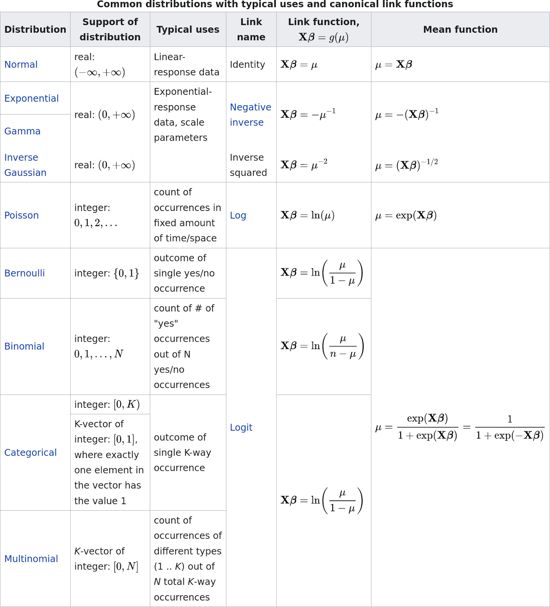
Screenshot taken from Wikipedia: https://en.wikipedia.org/wiki/Generalized_linear_model#Link_function. Content licensed under the Creative Commons Attribution-ShareAlike License 3.0.
5.1.1 A Binomial Example
We want to look at the titanic data set. A cleaned version of this is in the package EcoData, which you have to install first from GitHub. If you haven’t already installed this package, I hope this works for you:
# install.packages("devtools") # If you don't have the devtools package installed.
devtools::install_github(repo = "TheoreticalEcology/EcoData",
dependencies = T, build_vignettes = T)Let’s look at the titanic data set included in EcoData:
library(EcoData)##
## Attaching package: 'EcoData'## The following object is masked from 'package:MASS':
##
## cementstr(titanic)## 'data.frame': 1309 obs. of 14 variables:
## $ pclass : int 1 1 1 1 1 1 1 1 1 1 ...
## $ survived : int 1 1 0 0 0 1 1 0 1 0 ...
## $ name : chr "Allen, Miss. Elisabeth Walton" "Allison, Master. Hudson Trevor" "Allison, Miss. Helen Loraine" "Allison, Mr. Hudson Joshua Creighton" ...
## $ sex : chr "female" "male" "female" "male" ...
## $ age : num 29 0.917 2 30 25 ...
## $ sibsp : int 0 1 1 1 1 0 1 0 2 0 ...
## $ parch : int 0 2 2 2 2 0 0 0 0 0 ...
## $ ticket : chr "24160" "113781" "113781" "113781" ...
## $ fare : num 211 152 152 152 152 ...
## $ cabin : chr "B5" "C22 C26" "C22 C26" "C22 C26" ...
## $ embarked : chr "S" "S" "S" "S" ...
## $ boat : chr "2" "11" "" "" ...
## $ body : int NA NA NA 135 NA NA NA NA NA 22 ...
## $ home.dest: chr "St Louis, MO" "Montreal, PQ / Chesterville, ON" "Montreal, PQ / Chesterville, ON" "Montreal, PQ / Chesterville, ON" ...mosaicplot( ~ survived + sex + pclass, data = titanic)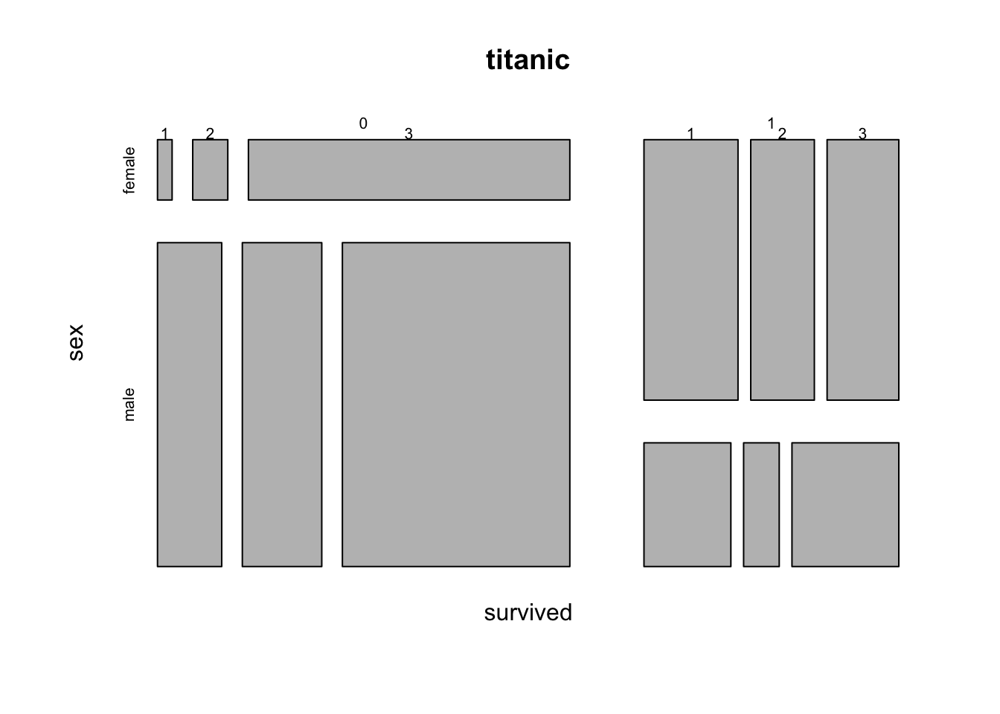
titanic$pclass = as.factor(titanic$pclass)You can fit an lm, but the residual checks make it very evident that the data with a 0/1 response don’t fit to the assumption of an lm:
fit = lm(survived ~ age, data = titanic)
summary(fit)##
## Call:
## lm(formula = survived ~ age, data = titanic)
##
## Residuals:
## Min 1Q Median 3Q Max
## -0.4642 -0.4156 -0.3796 0.5806 0.6867
##
## Coefficients:
## Estimate Std. Error t value Pr(>|t|)
## (Intercept) 0.464814 0.034973 13.291 <2e-16 ***
## age -0.001894 0.001054 -1.796 0.0727 .
## ---
## Signif. codes: 0 '***' 0.001 '**' 0.01 '*' 0.05 '.' 0.1 ' ' 1
##
## Residual standard error: 0.4912 on 1044 degrees of freedom
## (263 observations deleted due to missingness)
## Multiple R-squared: 0.003082, Adjusted R-squared: 0.002127
## F-statistic: 3.227 on 1 and 1044 DF, p-value: 0.07271par(mfrow = c(2, 2))
plot(fit)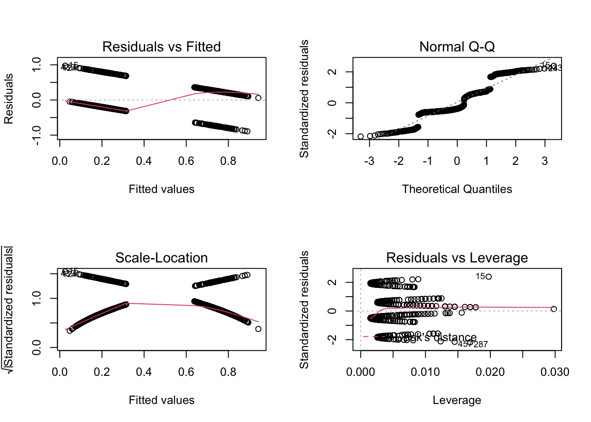
Thus, what we want to fit is a logistic regression, which assumes a 0/1 response. In principle, this is distribution is called Bernoulli, but in R both 0/1 and k/n are called “binomial”, as Bernoulli is the special case of binomial where n = 1.
m1 = glm(survived ~ sex, family = "binomial", data = titanic)
summary(m1)##
## Call:
## glm(formula = survived ~ sex, family = "binomial", data = titanic)
##
## Deviance Residuals:
## Min 1Q Median 3Q Max
## -1.6124 -0.6511 -0.6511 0.7977 1.8196
##
## Coefficients:
## Estimate Std. Error z value Pr(>|z|)
## (Intercept) 0.9818 0.1040 9.437 <2e-16 ***
## sexmale -2.4254 0.1360 -17.832 <2e-16 ***
## ---
## Signif. codes: 0 '***' 0.001 '**' 0.01 '*' 0.05 '.' 0.1 ' ' 1
##
## (Dispersion parameter for binomial family taken to be 1)
##
## Null deviance: 1741.0 on 1308 degrees of freedom
## Residual deviance: 1368.1 on 1307 degrees of freedom
## AIC: 1372.1
##
## Number of Fisher Scoring iterations: 4Can you interpret the output? What do the regression coefficients mean? This is a bit tricky. First of all, remember, if you want predictions, you have to apply the link function on the linear predictor. Binomial uses per default the logistic link, to calculate the response use:
plogis(0.98) # Women.## [1] 0.7271082plogis(0.98 - 2.43) # Men.## [1] 0.1900016You can also use the predict function,
newDat = data.frame(sex = as.factor(c("female", "male")))
predict(m1, newdata = newDat, se = T) # Linear predictor.## $fit
## 1 2
## 0.981813 -1.443625
##
## $se.fit
## 1 2
## 0.10403774 0.08762108
##
## $residual.scale
## [1] 1predict(m1, newdata = newDat, se = T, type = "response") # Response scale.## $fit
## 1 2
## 0.7274678 0.1909846
##
## $se.fit
## 1 2
## 0.02062636 0.01353829
##
## $residual.scale
## [1] 1or we just look at the effect plots
library(effects)
plot(allEffects(m1))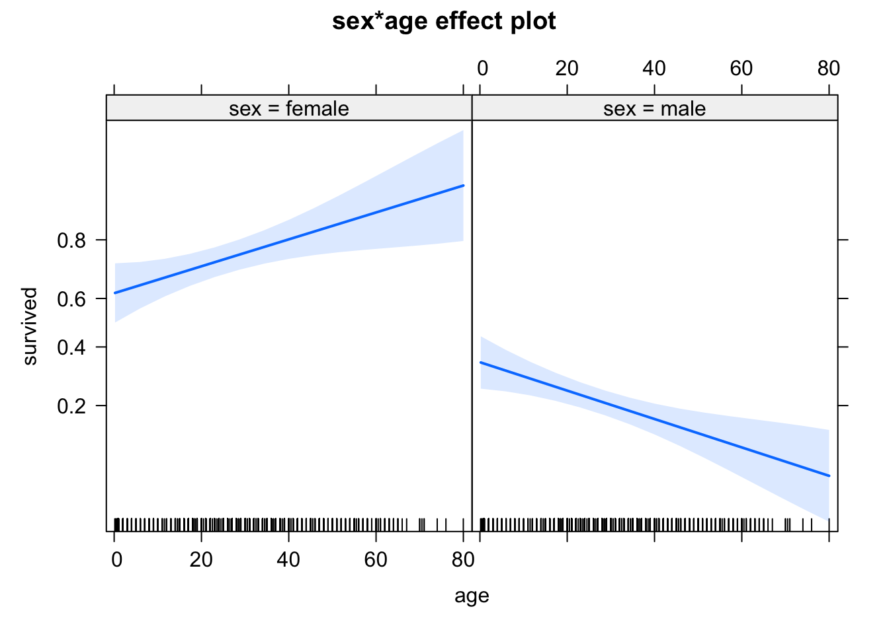
The same thing for a slightly more complicated model:
m2 = glm(survived ~ sex*age, family = "binomial", data = titanic)
summary(m2)##
## Call:
## glm(formula = survived ~ sex * age, family = "binomial", data = titanic)
##
## Deviance Residuals:
## Min 1Q Median 3Q Max
## -2.0247 -0.7158 -0.5776 0.7707 2.2960
##
## Coefficients:
## Estimate Std. Error z value Pr(>|z|)
## (Intercept) 0.493381 0.254188 1.941 0.052257 .
## sexmale -1.154139 0.339337 -3.401 0.000671 ***
## age 0.022516 0.008535 2.638 0.008342 **
## sexmale:age -0.046276 0.011216 -4.126 3.69e-05 ***
## ---
## Signif. codes: 0 '***' 0.001 '**' 0.01 '*' 0.05 '.' 0.1 ' ' 1
##
## (Dispersion parameter for binomial family taken to be 1)
##
## Null deviance: 1414.6 on 1045 degrees of freedom
## Residual deviance: 1083.4 on 1042 degrees of freedom
## (263 observations deleted due to missingness)
## AIC: 1091.4
##
## Number of Fisher Scoring iterations: 4plot(allEffects(m2))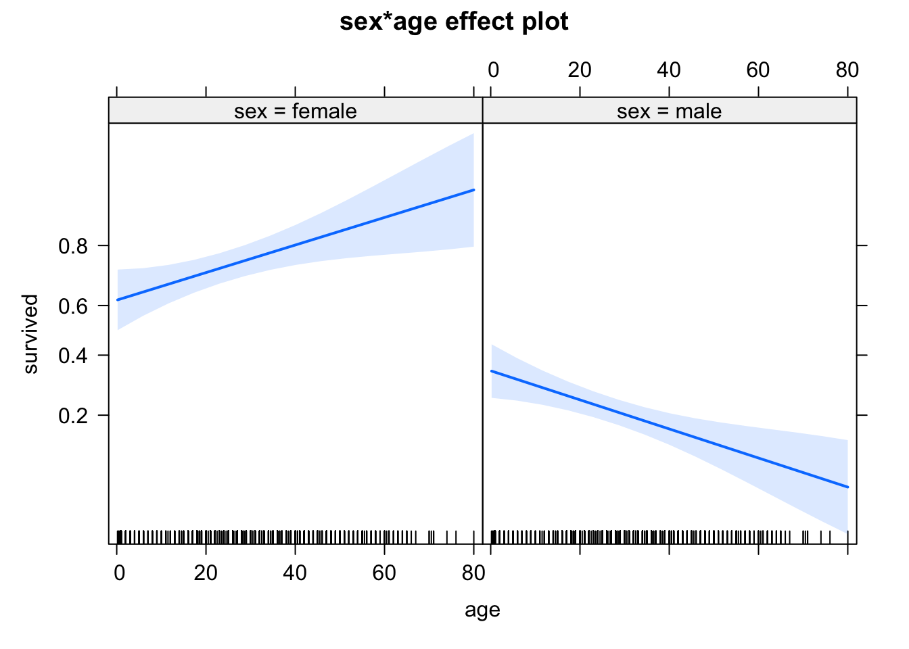
Note:
- Treatment coding for factors works as before.
- Age effects for male / female cannot directly be compared, because they are calculated at a different intercept, and through the nonlinear link, this leads to a different effect on the response. One option to solve this are the so-called odds ratios. Or just look at the response scale, e.g. via the effect plots, and interpret there!
Residual checks
Let’s check m2 from the Titanic example:
m2 = glm(survived ~ sex*age, family = "binomial", data = titanic)First of all: Due to an unfortunate programming choice in R (Nerds: Check class(m2)), the standard residual plots
par(mfrow = c(2, 2))
plot(m2)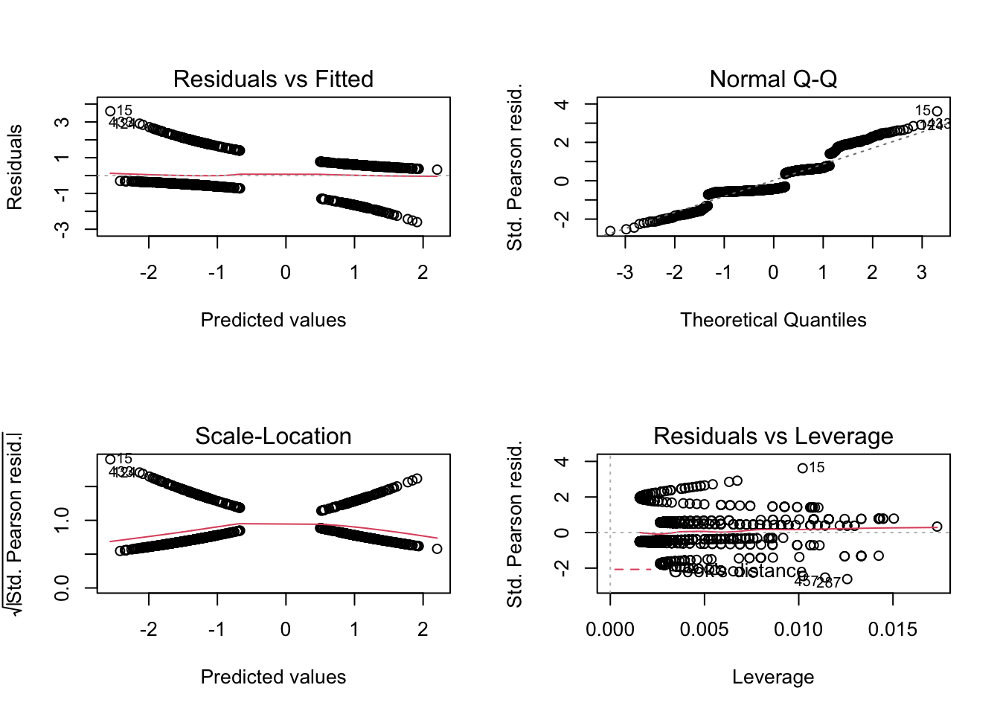
still work, but they don’t look any better than before, because they still check for normality of the residuals, while we are interested in the question of whether the residuals are binomially distributed. The DHARMa.{R} package solves this problem. Load the DHARMa.{R} package, which should have been installed with EcoData already:
library(DHARMa)Calculate residuals:
res = simulateResiduals(m2)Standard plot:
plot(res)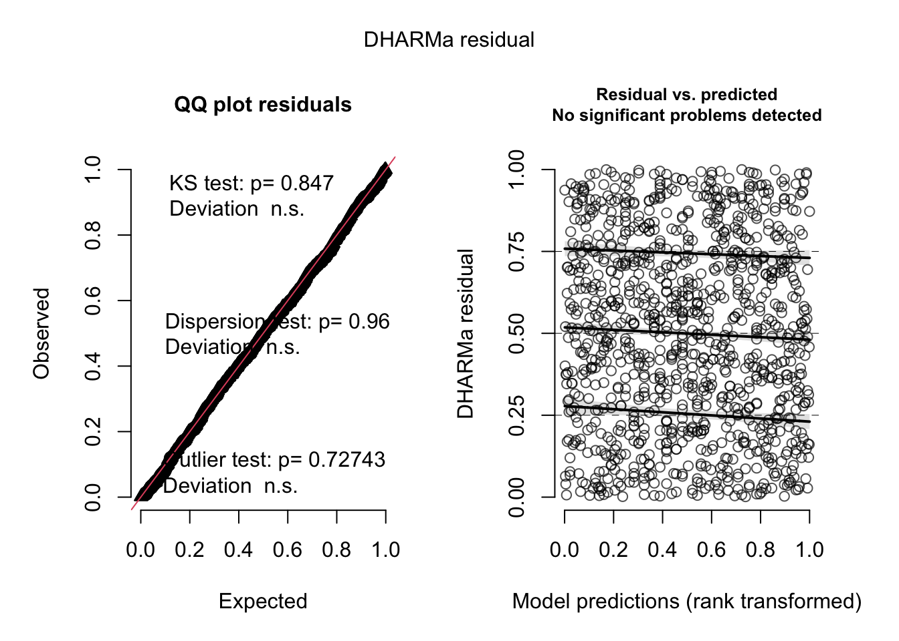
Out of the help page: The function creates a plot with two panels. The left panel is a uniform Q-Q plot (calling plotQQunif), and the right panel shows residuals against predicted values (calling plotResiduals), with outliers highlighted in red.
Very briefly, we would expect that a correctly specified model shows:
A straight 1-1 line, as well as not significant of the displayed tests in the Q-Q-plot (left) -> Evidence for a correct overall residual distribution (for more details on the interpretation of this plot, see help).
Visual homogeneity of residuals in both vertical and horizontal direction, as well as no significance of quantile tests in the Residual vs. predicted plot (for more details on the interpretation of this plot, see help).
Deviations from these expectations can be interpreted similarly to a linear regression. See the vignette for detailed examples.
Also residuals against predictors shows no particular problem:
par(mfrow = c(1, 2))
plotResiduals(m2, form = model.frame(m2)$age)
plotResiduals(m2, form = model.frame(m2)$sex)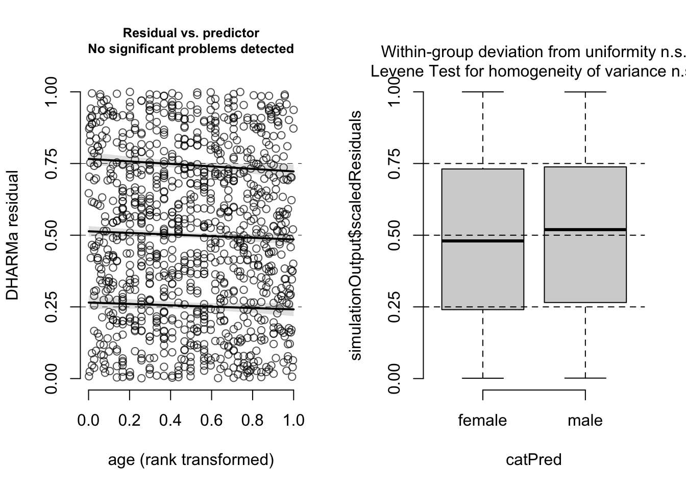
Residuals against missing predictor show a clear problem:
dataUsed = as.numeric(rownames(model.frame(m2)))
plotResiduals(m2, form = titanic$pclass[dataUsed])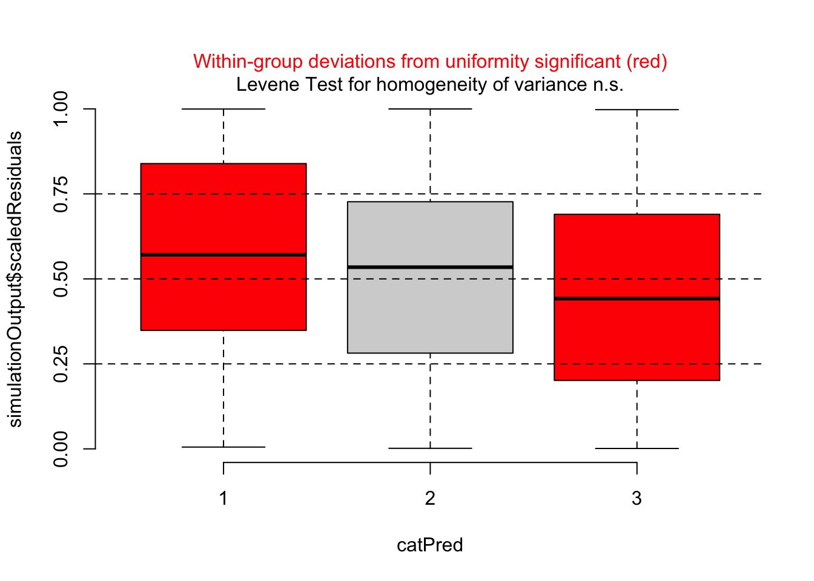
We will talk about DHARMa.{R} more later, see also comments on testing binomial GLMs
here.
5.1.2 A Poisson Example
library(EcoData)
str(birdfeeding)## 'data.frame': 25 obs. of 2 variables:
## $ feeding : int 3 6 8 4 2 7 6 8 10 3 ...
## $ attractiveness: int 1 1 1 1 1 2 2 2 2 2 ...plot(feeding ~ attractiveness, data = birdfeeding)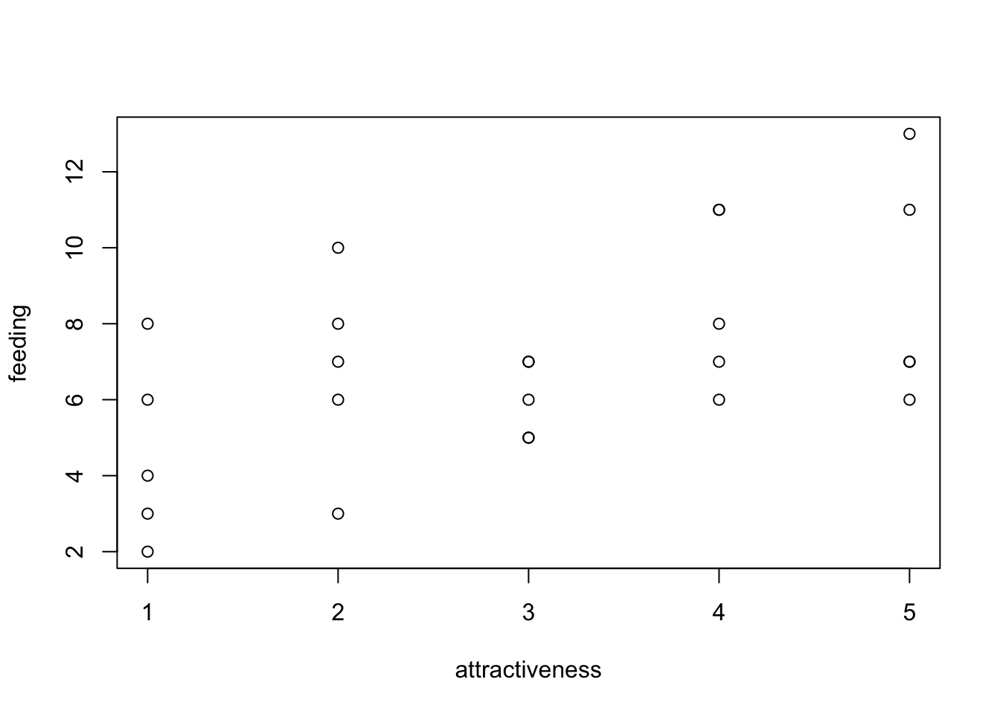
fit = glm(feeding ~ attractiveness, data = birdfeeding, family = "poisson")
summary(fit)##
## Call:
## glm(formula = feeding ~ attractiveness, family = "poisson", data = birdfeeding)
##
## Deviance Residuals:
## Min 1Q Median 3Q Max
## -1.55377 -0.72834 0.03699 0.59093 1.54584
##
## Coefficients:
## Estimate Std. Error z value Pr(>|z|)
## (Intercept) 1.47459 0.19443 7.584 3.34e-14 ***
## attractiveness 0.14794 0.05437 2.721 0.00651 **
## ---
## Signif. codes: 0 '***' 0.001 '**' 0.01 '*' 0.05 '.' 0.1 ' ' 1
##
## (Dispersion parameter for poisson family taken to be 1)
##
## Null deviance: 25.829 on 24 degrees of freedom
## Residual deviance: 18.320 on 23 degrees of freedom
## AIC: 115.42
##
## Number of Fisher Scoring iterations: 4Log link means that calculating predicted value for attractiveness requires exp(linear response).
exp(1.47459 + 3 * 0.14794)## [1] 6.810122Effect plots, not the log scaling on the y axis
plot(allEffects(fit))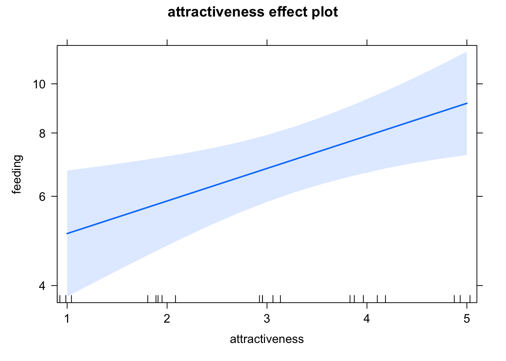
Residual checks are OK.
res = simulateResiduals(fit)
plot(res)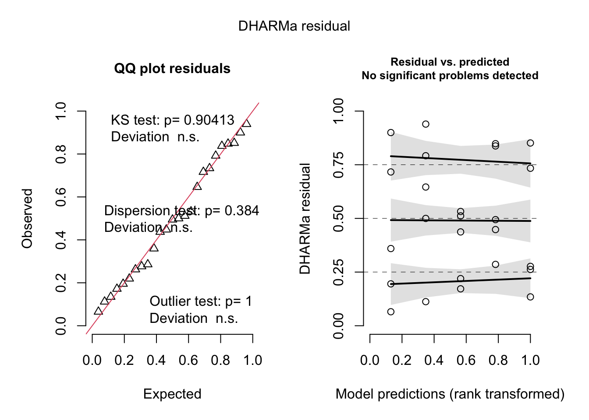
5.1.3 Example - Elk Data
Task
Here a data set of habitat use of Elks in Canada. Measured is the presence of Elks (0/1), and a number of other predictors. Perform either:
- A predictive analysis, i.e. a model to predict where Elks can be found.
- A causal analysis, trying to understand the effect of roads on Elk presence.
Solution
a
b
5.2 Dispersion Problems in GLMs
The problem with functions such as the Poisson or the Binomial (for k/n data) is, unlike the normal distribution, they do not have a parameter for the dispersion. That is, unlike the normal distribution, which can have different levels of spread around the regression line, the Poisson distribution always assumes a certain mean corresponds to a fixed variance.
This is obviously not always a good assumption. In most cases with count data, we actually find overdispersion (more dispersion than expected). You can, however, also have underdispersion, i.e. less dispersion than expected. Ways to treat this include
- Quasi-distributions, which are available in glm. Those add a term to the likelihood that corrects the p-values for the dispersion, but they are not distributions .-> Can’t check residuals, no AIC. -> Discouraged.
- Observation-level random effect (OLRE) - Add a separate random effect per observation. This effectively creates a normal random variate at the level of the linear predictor, increases variance on the responses.
- A GLM distribution with variable dispersion, for Poisson usually the negative binomial.
Because the 3rd option gives us more possibilities to model e.g. heteroskedasticity later, its preferable over an OLRE. I would always recommend the third option.
Example:
library(glmmTMB)
library(lme4)
library(DHARMa)
m1 = glm(count ~ spp + mined, family = poisson, data = Salamanders)
summary(m1)##
## Call:
## glm(formula = count ~ spp + mined, family = poisson, data = Salamanders)
##
## Deviance Residuals:
## Min 1Q Median 3Q Max
## -2.8155 -1.0024 -0.7241 0.0315 9.9255
##
## Coefficients:
## Estimate Std. Error z value Pr(>|z|)
## (Intercept) -1.33879 0.13811 -9.694 < 2e-16 ***
## sppPR -1.38629 0.21517 -6.443 1.17e-10 ***
## sppDM 0.23052 0.12889 1.789 0.0737 .
## sppEC-A -0.77011 0.17105 -4.502 6.73e-06 ***
## sppEC-L 0.62117 0.11931 5.206 1.92e-07 ***
## sppDES-L 0.67916 0.11813 5.749 8.96e-09 ***
## sppDF 0.08004 0.13344 0.600 0.5486
## minedno 2.03676 0.11092 18.363 < 2e-16 ***
## ---
## Signif. codes: 0 '***' 0.001 '**' 0.01 '*' 0.05 '.' 0.1 ' ' 1
##
## (Dispersion parameter for poisson family taken to be 1)
##
## Null deviance: 2120.7 on 643 degrees of freedom
## Residual deviance: 1310.3 on 636 degrees of freedom
## AIC: 2049.6
##
## Number of Fisher Scoring iterations: 6res = simulateResiduals(m1, plot = T)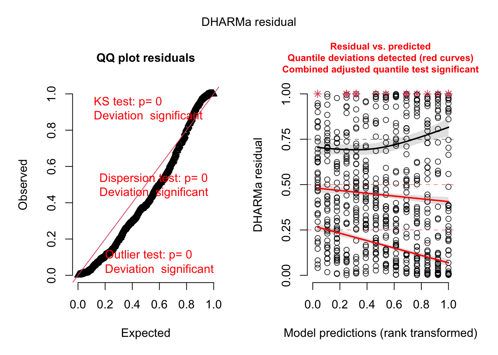
# Looks overdispersed, additional check.
testDispersion(res)
##
## DHARMa nonparametric dispersion test via sd of residuals fitted vs.
## simulated
##
## data: simulationOutput
## dispersion = 3.9152, p-value < 2.2e-16
## alternative hypothesis: two.sided# Add random effect for site.
m2 = glmer(count ~ spp + mined + (1|site), family = poisson, data = Salamanders)
summary(m2)## Generalized linear mixed model fit by maximum likelihood (Laplace
## Approximation) [glmerMod]
## Family: poisson ( log )
## Formula: count ~ spp + mined + (1 | site)
## Data: Salamanders
##
## AIC BIC logLik deviance df.resid
## 1962.8 2003.0 -972.4 1944.8 635
##
## Scaled residuals:
## Min 1Q Median 3Q Max
## -2.6006 -0.7446 -0.4143 0.0836 11.7241
##
## Random effects:
## Groups Name Variance Std.Dev.
## site (Intercept) 0.3313 0.5756
## Number of obs: 644, groups: site, 23
##
## Fixed effects:
## Estimate Std. Error z value Pr(>|z|)
## (Intercept) -1.62411 0.23853 -6.809 9.84e-12 ***
## sppPR -1.38623 0.21416 -6.473 9.61e-11 ***
## sppDM 0.23048 0.12829 1.797 0.0724 .
## sppEC-A -0.77012 0.17026 -4.523 6.09e-06 ***
## sppEC-L 0.62111 0.11875 5.230 1.69e-07 ***
## sppDES-L 0.67911 0.11758 5.776 7.66e-09 ***
## sppDF 0.08004 0.13282 0.603 0.5468
## minedno 2.26373 0.27869 8.123 4.56e-16 ***
## ---
## Signif. codes: 0 '***' 0.001 '**' 0.01 '*' 0.05 '.' 0.1 ' ' 1
##
## Correlation of Fixed Effects:
## (Intr) sppPR sppDM spEC-A spEC-L sDES-L sppDF
## sppPR -0.180
## sppDM -0.300 0.334
## sppEC-A -0.226 0.252 0.420
## sppEC-L -0.324 0.361 0.602 0.454
## sppDES-L -0.327 0.364 0.608 0.458 0.657
## sppDF -0.290 0.322 0.538 0.406 0.582 0.587
## minedno -0.733 0.000 0.000 0.000 0.000 0.000 0.000res = simulateResiduals(m2, plot = T)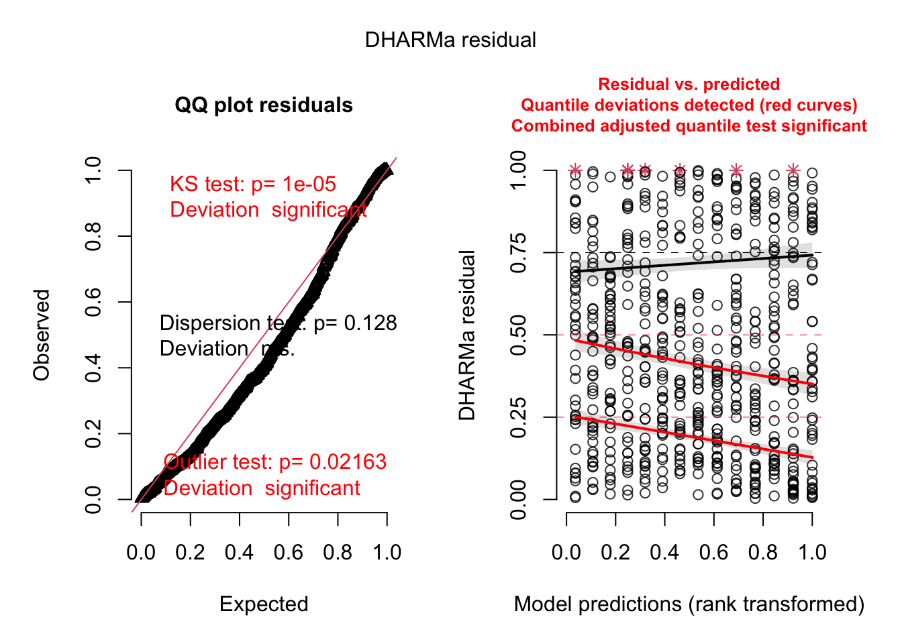
# Now dispersion seems to be OK, rather another problem with heteroskedasticity, see next.
# Just for the sake of completeness, if we would have still overdispersion,
# these would be the two options:
# Variable dispersion via OLRE.
Salamanders$ID = 1:nrow(Salamanders)
m3 = glmer(count ~ spp + mined + (1|site) + (1|ID), family = poisson, data = Salamanders)
summary(m3)## Generalized linear mixed model fit by maximum likelihood (Laplace
## Approximation) [glmerMod]
## Family: poisson ( log )
## Formula: count ~ spp + mined + (1 | site) + (1 | ID)
## Data: Salamanders
##
## AIC BIC logLik deviance df.resid
## 1671.5 1716.2 -825.8 1651.5 634
##
## Scaled residuals:
## Min 1Q Median 3Q Max
## -1.122 -0.458 -0.286 0.139 2.736
##
## Random effects:
## Groups Name Variance Std.Dev.
## ID (Intercept) 1.0111 1.0055
## site (Intercept) 0.2459 0.4958
## Number of obs: 644, groups: ID, 644; site, 23
##
## Fixed effects:
## Estimate Std. Error z value Pr(>|z|)
## (Intercept) -2.1808 0.2838 -7.684 1.54e-14 ***
## sppPR -1.4120 0.3065 -4.606 4.10e-06 ***
## sppDM 0.3801 0.2354 1.615 0.106389
## sppEC-A -0.7762 0.2710 -2.864 0.004185 **
## sppEC-L 0.5243 0.2332 2.248 0.024561 *
## sppDES-L 0.8157 0.2279 3.579 0.000344 ***
## sppDF 0.2856 0.2386 1.197 0.231184
## minedno 2.3197 0.2723 8.517 < 2e-16 ***
## ---
## Signif. codes: 0 '***' 0.001 '**' 0.01 '*' 0.05 '.' 0.1 ' ' 1
##
## Correlation of Fixed Effects:
## (Intr) sppPR sppDM spEC-A spEC-L sDES-L sppDF
## sppPR -0.307
## sppDM -0.477 0.405
## sppEC-A -0.364 0.360 0.460
## sppEC-L -0.474 0.412 0.541 0.467
## sppDES-L -0.504 0.418 0.557 0.475 0.560
## sppDF -0.480 0.400 0.532 0.455 0.537 0.553
## minedno -0.658 -0.023 0.029 -0.015 0.026 0.042 0.037
## optimizer (Nelder_Mead) convergence code: 0 (OK)
## Model failed to converge with max|grad| = 0.103661 (tol = 0.002, component 1)res = simulateResiduals(m3, plot = T)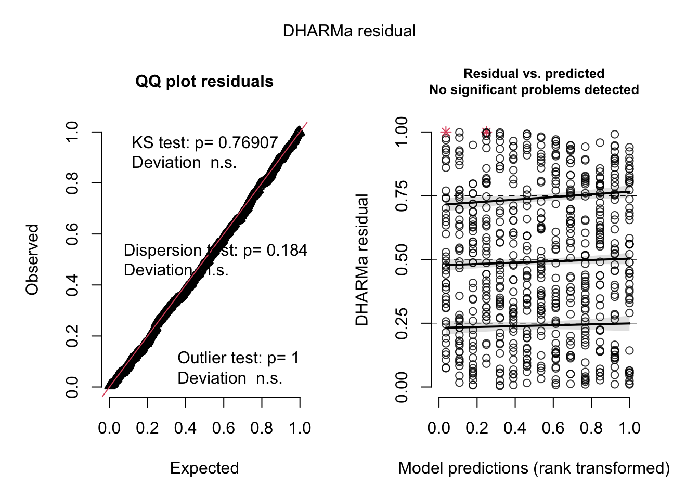
# Variable dispersion via negative binomial.
m4 = glmmTMB(count ~ spp + mined + (1|site), family = nbinom2, data = Salamanders)
summary(m4)## Family: nbinom2 ( log )
## Formula: count ~ spp + mined + (1 | site)
## Data: Salamanders
##
## AIC BIC logLik deviance df.resid
## 1672.4 1717.1 -826.2 1652.4 634
##
## Random effects:
##
## Conditional model:
## Groups Name Variance Std.Dev.
## site (Intercept) 0.2945 0.5426
## Number of obs: 644, groups: site, 23
##
## Dispersion parameter for nbinom2 family (): 0.942
##
## Conditional model:
## Estimate Std. Error z value Pr(>|z|)
## (Intercept) -1.6832 0.2742 -6.140 8.28e-10 ***
## sppPR -1.3197 0.2875 -4.591 4.42e-06 ***
## sppDM 0.3686 0.2235 1.649 0.099056 .
## sppEC-A -0.7098 0.2530 -2.806 0.005017 **
## sppEC-L 0.5714 0.2191 2.608 0.009105 **
## sppDES-L 0.7929 0.2166 3.660 0.000252 ***
## sppDF 0.3120 0.2329 1.340 0.180337
## minedno 2.2633 0.2838 7.975 1.53e-15 ***
## ---
## Signif. codes: 0 '***' 0.001 '**' 0.01 '*' 0.05 '.' 0.1 ' ' 1res = simulateResiduals(m4, plot = T)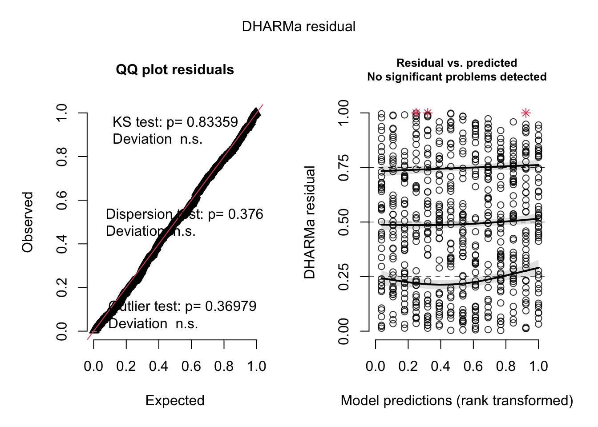
5.2.1 Heteroskedasticity in GLMMs
GLM(M)s can be heteroskedastic as well, i.e. dispersion depends on some predictors. In glmmTMB.{R}, you can make the dispersion of the negative Binomial dependent on a formula via the dispformula.{R} argument, in the same way as in nlme.{R} for the linear model.
Variance problems would show up when plotting residuals against predicted and predictors. On the previous page, we saw some variance problems in the Salamander model. We could add a variable dispersion model via
m3 = glmmTMB(count ~ spp + mined + (1|site), family = nbinom1,
dispformula = ~ spp + mined , data = Salamanders)
summary(m3)## Family: nbinom1 ( log )
## Formula: count ~ spp + mined + (1 | site)
## Dispersion: ~spp + mined
## Data: Salamanders
##
## AIC BIC logLik deviance df.resid
## 1654.4 1730.3 -810.2 1620.4 627
##
## Random effects:
##
## Conditional model:
## Groups Name Variance Std.Dev.
## site (Intercept) 0.2283 0.4778
## Number of obs: 644, groups: site, 23
##
## Conditional model:
## Estimate Std. Error z value Pr(>|z|)
## (Intercept) -1.5288 0.2799 -5.462 4.70e-08 ***
## sppPR -1.3304 0.3480 -3.822 0.000132 ***
## sppDM 0.2695 0.2004 1.345 0.178561
## sppEC-A -0.7525 0.2772 -2.714 0.006641 **
## sppEC-L 0.6228 0.2109 2.952 0.003155 **
## sppDES-L 0.7113 0.1976 3.600 0.000318 ***
## sppDF 0.1470 0.2171 0.677 0.498259
## minedno 2.1348 0.2825 7.557 4.14e-14 ***
## ---
## Signif. codes: 0 '***' 0.001 '**' 0.01 '*' 0.05 '.' 0.1 ' ' 1
##
## Dispersion model:
## Estimate Std. Error z value Pr(>|z|)
## (Intercept) -0.2834 0.6414 -0.442 0.6586
## sppPR 0.3160 0.7501 0.421 0.6735
## sppDM 0.1979 0.5712 0.346 0.7289
## sppEC-A 0.3592 0.6477 0.554 0.5792
## sppEC-L 1.0830 0.5215 2.077 0.0378 *
## sppDES-L 0.7951 0.5370 1.481 0.1387
## sppDF 0.3769 0.6109 0.617 0.5373
## minedno 0.5583 0.4187 1.334 0.1823
## ---
## Signif. codes: 0 '***' 0.001 '**' 0.01 '*' 0.05 '.' 0.1 ' ' 1res = simulateResiduals(m3, plot = T)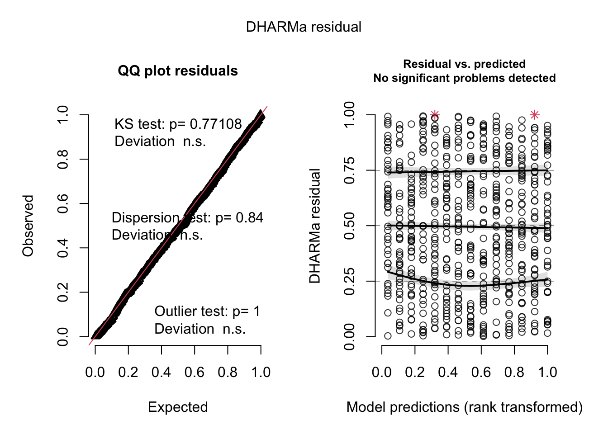
par(mfrow = c(1, 2))
plotResiduals(res, Salamanders$spp)
plotResiduals(res, Salamanders$mined)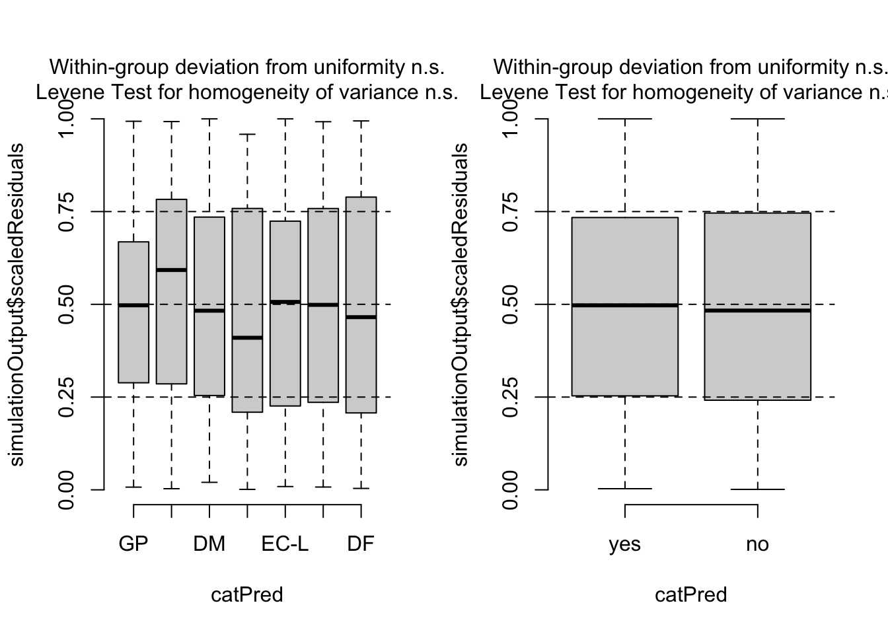
5.2.2 Zero-inflation
Another common problem in count data (Poisson / negative binomial), but also other GLMs (e.g. beta) is that the observed data has more zeros than expected by the fitted distribution. To deal with this zero-inflation, we have to add an additional model component that controls how many zeros are produced. The default way to do this is assuming two separate processes which act after one another:
- A binomial model for 0 or not,
- if is not zero, a number from Poisson or negative binomial.
Note that the result of 2. can again be zero, so there are two explanations for a zero in the data.
Zero-inflated GLMMs can, for example, be fit with the glmmTMB.{R} package, using ziformula = ~ 0.
How to check for zero-inflation
Important: Do not check for zero-inflation in the response.
DHARMa.{R} has a function for testing zero-inflation:
m4 = glmmTMB(count ~ spp + mined + (1|site), family = nbinom2, data = Salamanders)
summary(m4)## Family: nbinom2 ( log )
## Formula: count ~ spp + mined + (1 | site)
## Data: Salamanders
##
## AIC BIC logLik deviance df.resid
## 1672.4 1717.1 -826.2 1652.4 634
##
## Random effects:
##
## Conditional model:
## Groups Name Variance Std.Dev.
## site (Intercept) 0.2945 0.5426
## Number of obs: 644, groups: site, 23
##
## Dispersion parameter for nbinom2 family (): 0.942
##
## Conditional model:
## Estimate Std. Error z value Pr(>|z|)
## (Intercept) -1.6832 0.2742 -6.140 8.28e-10 ***
## sppPR -1.3197 0.2875 -4.591 4.42e-06 ***
## sppDM 0.3686 0.2235 1.649 0.099056 .
## sppEC-A -0.7098 0.2530 -2.806 0.005017 **
## sppEC-L 0.5714 0.2191 2.608 0.009105 **
## sppDES-L 0.7929 0.2166 3.660 0.000252 ***
## sppDF 0.3120 0.2329 1.340 0.180337
## minedno 2.2633 0.2838 7.975 1.53e-15 ***
## ---
## Signif. codes: 0 '***' 0.001 '**' 0.01 '*' 0.05 '.' 0.1 ' ' 1res = simulateResiduals(m4, plot = T)testZeroInflation(res)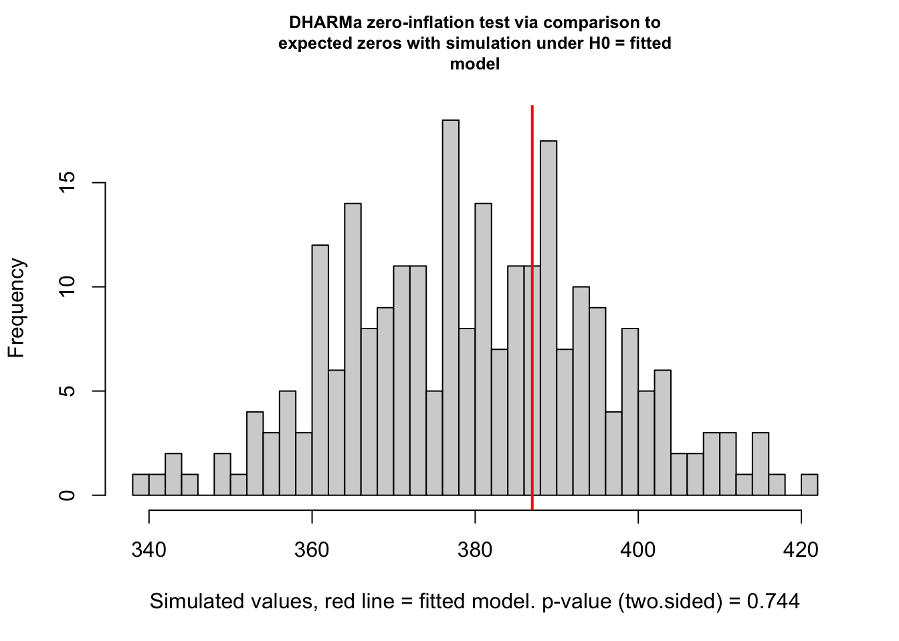
##
## DHARMa zero-inflation test via comparison to expected zeros with
## simulation under H0 = fitted model
##
## data: simulationOutput
## ratioObsSim = 1.0172, p-value = 0.744
## alternative hypothesis: two.sidedProblem with this: When there is really zero-inflation, variable dispersion models such as the Poisson often simply increase the dispersion to account for the zeros, leading to no apparent zero-inflation in the residuals, but rather underdispersion.
Thus, if you see underdispersion in variable-dispersion GLM for count data, check for zero-inflation. Reliable check is to simply compare a zero-inflation model via AIC or likelihood ratio test.
5.2.3 P-hacking Link Collection
In the context of GLM(M)s, you have also to be careful about p-hacking. See 3.3.4.
5.3 Case Studies
Strategy for analysis:
- Define formula via scientific questions + confounders.
- Define type of GLM (lm, logistic, Poisson).
- Blocks in data -> Random effects, start with random intercept.
Fit this base model, then do residual checks for
- Wrong functional form -> Change fitted function.
- Wrong distribution-> Transformation or GLM adjustment.
- (Over)dispersion -> Variable dispersion GLM.
- Heteroskedasticity -> Model dispersion.
- Zero-inflation -> Add ZIP term.
- …
And adjust the model accordingly.
5.3.1 Owls
Task
Look at the Owl data set in the glmmTMB.{R} package. The initial hypothesis is
library(glmmTMB)
m1 = glm(SiblingNegotiation ~ FoodTreatment*SexParent + offset(log(BroodSize)),
data = Owls , family = poisson)
res = simulateResiduals(m1)
plot(res)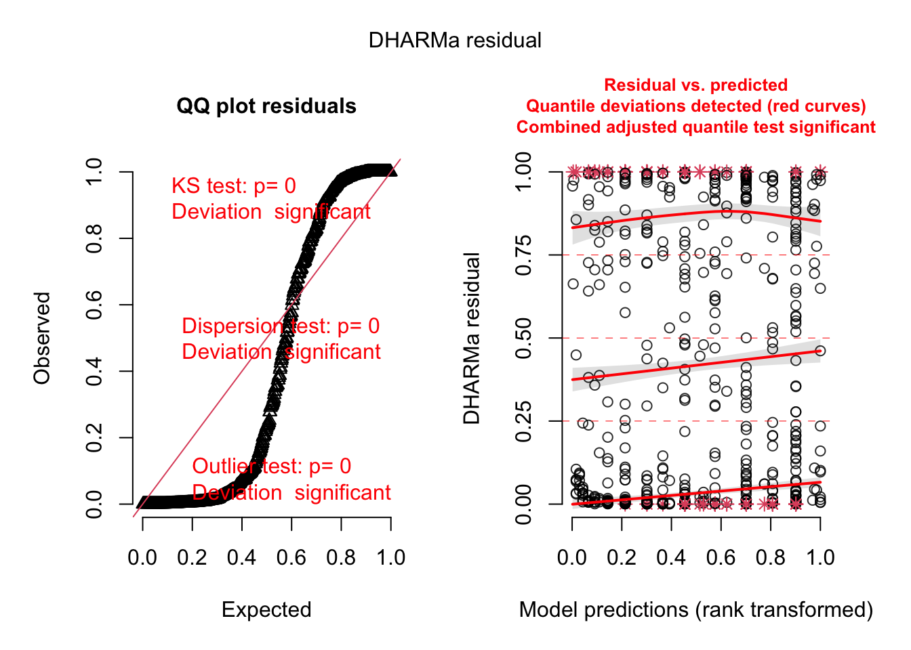
The offset is a special command that can be used in all regression models.
- First, try to understand what the offset does!
- Then, try to improve the model with everything we have discussed so far.
Possible solution
m1 = glmmTMB::glmmTMB(SiblingNegotiation ~ FoodTreatment * SexParent
+ (1|Nest) + offset(log(BroodSize)), data = Owls , family = nbinom1,
dispformula = ~ FoodTreatment + SexParent,
ziformula = ~ FoodTreatment + SexParent)
summary(m1)## Family: nbinom1 ( log )
## Formula:
## SiblingNegotiation ~ FoodTreatment * SexParent + (1 | Nest) +
## offset(log(BroodSize))
## Zero inflation: ~FoodTreatment + SexParent
## Dispersion: ~FoodTreatment + SexParent
## Data: Owls
##
## AIC BIC logLik deviance df.resid
## 3354.6 3402.9 -1666.3 3332.6 588
##
## Random effects:
##
## Conditional model:
## Groups Name Variance Std.Dev.
## Nest (Intercept) 0.0876 0.296
## Number of obs: 599, groups: Nest, 27
##
## Conditional model:
## Estimate Std. Error z value Pr(>|z|)
## (Intercept) 0.80028 0.09736 8.220 < 2e-16 ***
## FoodTreatmentSatiated -0.46893 0.16760 -2.798 0.00514 **
## SexParentMale -0.09127 0.09247 -0.987 0.32363
## FoodTreatmentSatiated:SexParentMale 0.13087 0.19028 0.688 0.49158
## ---
## Signif. codes: 0 '***' 0.001 '**' 0.01 '*' 0.05 '.' 0.1 ' ' 1
##
## Zero-inflation model:
## Estimate Std. Error z value Pr(>|z|)
## (Intercept) -1.9132 0.3269 -5.853 4.84e-09 ***
## FoodTreatmentSatiated 1.0564 0.4072 2.594 0.00948 **
## SexParentMale -0.4688 0.3659 -1.281 0.20012
## ---
## Signif. codes: 0 '***' 0.001 '**' 0.01 '*' 0.05 '.' 0.1 ' ' 1
##
## Dispersion model:
## Estimate Std. Error z value Pr(>|z|)
## (Intercept) 1.2122 0.2214 5.475 4.37e-08 ***
## FoodTreatmentSatiated 0.7978 0.2732 2.920 0.0035 **
## SexParentMale -0.1540 0.2399 -0.642 0.5209
## ---
## Signif. codes: 0 '***' 0.001 '**' 0.01 '*' 0.05 '.' 0.1 ' ' 1res = simulateResiduals(m1, plot = T)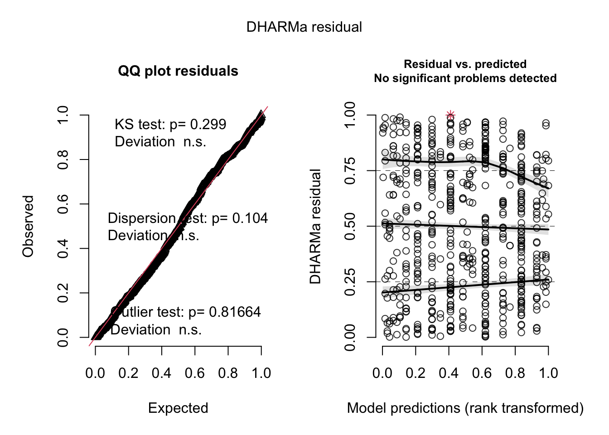
testDispersion(m1)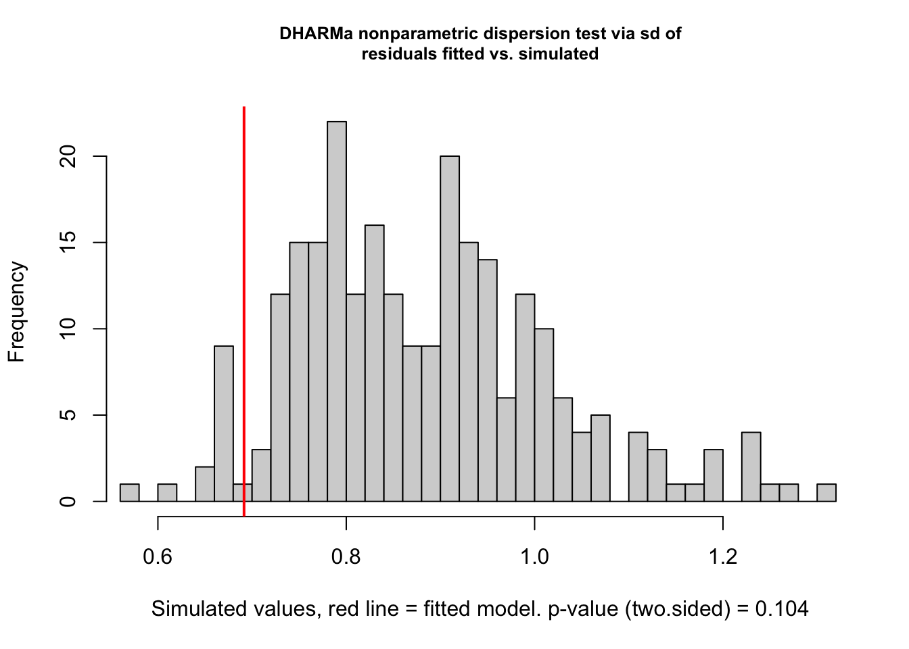
##
## DHARMa nonparametric dispersion test via sd of residuals fitted vs.
## simulated
##
## data: simulationOutput
## dispersion = 0.78311, p-value = 0.104
## alternative hypothesis: two.sidedtestZeroInflation(m1)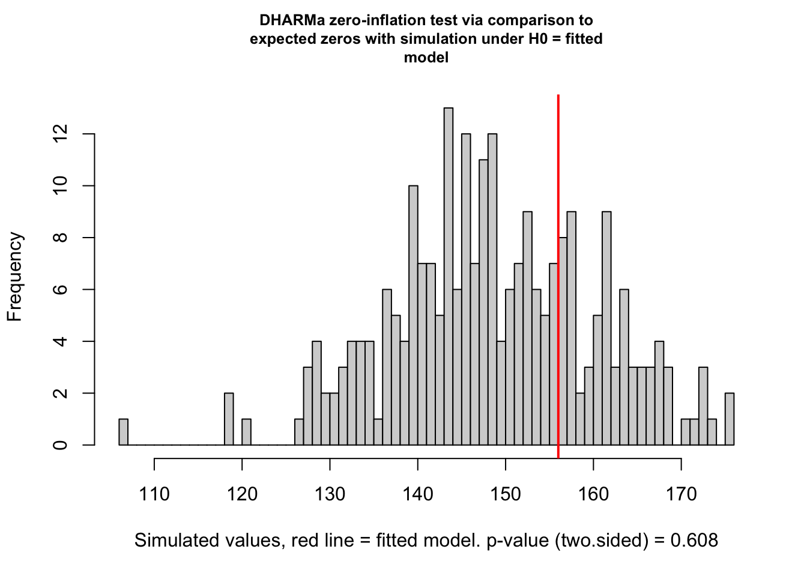
##
## DHARMa zero-inflation test via comparison to expected zeros with
## simulation under H0 = fitted model
##
## data: simulationOutput
## ratioObsSim = 1.0465, p-value = 0.608
## alternative hypothesis: two.sided5.3.2 Hurricanes
Task
In https://www.pnas.org/content/111/24/8782, Jung et al. claim that “Female hurricanes are deadlier than male hurricanes”.
Specifically, they analyze the number of hurricane fatalities, and claim that there is an effect of the femininity of the name on the number of fatalities, correcting for several possible confounders. They interpret the result as causal (including mediators), claiming that giving only male names to hurricanes would considerably reduce death toll.
The data is available in DHARMa.
library(DHARMa)
library(mgcv)
str(hurricanes)## tibble [92 × 14] (S3: tbl_df/tbl/data.frame)
## $ Year : num [1:92] 1950 1950 1952 1953 1953 ...
## $ Name : chr [1:92] "Easy" "King" "Able" "Barbara" ...
## $ MasFem : num [1:92] 6.78 1.39 3.83 9.83 8.33 ...
## $ MinPressure_before : num [1:92] 958 955 985 987 985 960 954 938 962 987 ...
## $ Minpressure_Updated_2014: num [1:92] 960 955 985 987 985 960 954 938 962 987 ...
## $ Gender_MF : num [1:92] 1 0 0 1 1 1 1 1 1 1 ...
## $ Category : num [1:92] 3 3 1 1 1 3 3 4 3 1 ...
## $ alldeaths : num [1:92] 2 4 3 1 0 60 20 20 0 200 ...
## $ NDAM : num [1:92] 1590 5350 150 58 15 ...
## $ Elapsed_Yrs : num [1:92] 63 63 61 60 60 59 59 59 58 58 ...
## $ Source : chr [1:92] "MWR" "MWR" "MWR" "MWR" ...
## $ ZMasFem : num [1:92] -0.000935 -1.670758 -0.913313 0.945871 0.481075 ...
## $ ZMinPressure_A : num [1:92] -0.356 -0.511 1.038 1.141 1.038 ...
## $ ZNDAM : num [1:92] -0.439 -0.148 -0.55 -0.558 -0.561 ...Some plots:
plot(hurricanes$MasFem, hurricanes$NDAM, cex = 0.5, pch = 5)
points(hurricanes$MasFem, hurricanes$NDAM, cex = hurricanes$alldeaths/20,
pch = 4, col= "red")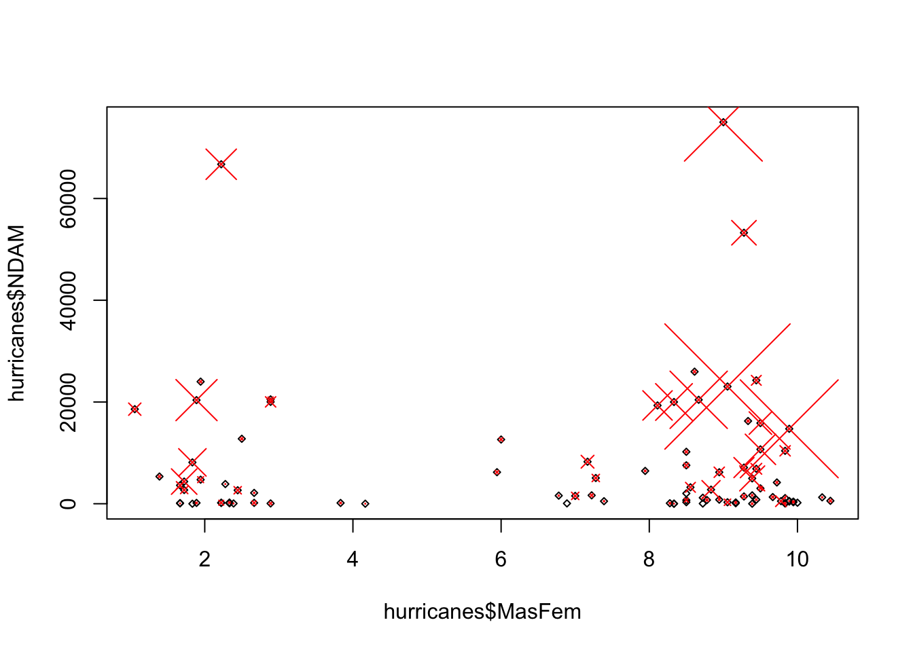
The original model from the paper fits a negative binomial, using mgcv.{R}.
originalModelGAM = gam(alldeaths ~ MasFem * (Minpressure_Updated_2014 + NDAM),
data = hurricanes, family = nb, na.action = "na.fail")
summary(originalModelGAM)##
## Family: Negative Binomial(0.736)
## Link function: log
##
## Formula:
## alldeaths ~ MasFem * (Minpressure_Updated_2014 + NDAM)
##
## Parametric coefficients:
## Estimate Std. Error z value Pr(>|z|)
## (Intercept) 7.014e+01 2.003e+01 3.502 0.000462 ***
## MasFem -5.986e+00 2.529e+00 -2.367 0.017927 *
## Minpressure_Updated_2014 -7.008e-02 2.060e-02 -3.402 0.000669 ***
## NDAM -3.845e-05 2.945e-05 -1.305 0.191735
## MasFem:Minpressure_Updated_2014 6.124e-03 2.603e-03 2.352 0.018656 *
## MasFem:NDAM 1.593e-05 3.756e-06 4.242 2.21e-05 ***
## ---
## Signif. codes: 0 '***' 0.001 '**' 0.01 '*' 0.05 '.' 0.1 ' ' 1
##
##
## R-sq.(adj) = -3.61e+03 Deviance explained = 57.4%
## -REML = 357.56 Scale est. = 1 n = 92Tasks:
- Confirm that you get the same results as in the paper.
- Forget what they did. Go back to start, do a causal analysis like we did, and do your own model, diagnosing all residual problems that we discussed.
Solution
5.3.3 Researchers Degrees of Freedom — Skin Color and Red Cards
In 2018 Silberzahn et al. published a “meta analysis” in Advances in Methods and Practices in Psychological Science, where they had provided 29 teams with the same data set to answer one research question: “[W]hether soccer players with dark skin tone are more likely than those with light skin tone to receive red cards from referees”.
Spoiler: They found that the “[a]nalytic approaches varied widely across the teams, and the estimated effect sizes ranged from 0.89 to 2.93 (Mdn = 1.31) in odds-ratio units”, highlighting that different approaches in data analysis can yield significant variation in the results.
You can find the paper “Many Analysts, One Data Set: Making Transparent How Variations in Analytic Choices Affect Results” at: https://journals.sagepub.com/doi/10.1177/2515245917747646.
Task
Do a re-analysis of the data as if you were the 30th team to contribute the results to the meta analysis.
- Download the data file “CrowdstormingDataJuly1st.csv” here: https://osf.io/fv8c3/.
- Variable explanations are provided in the README: https://osf.io/9yh4x/.
- Analyze the data. Given the research question, the selected variables are:
- Response variable: ‘redCards’ (+‘yellowReds’?).
- Multiple variables, potentially accounting for confounding, offsetting, grouping, … are included in the data.
- primary predictors: ‘rater1’, ‘rater2’
- These variables reflect ratings of “two independent raters blind to the research question who, based on their profile photo, categorized players on a 5-point scale ranging from (1) very light skin to (5) very dark skin.
- Make sure that ‘rater1’ and ‘rater2’ are rescaled to the range 0 … 1 as described in the paper (“This variable was rescaled to be bounded by 0 (very light skin) and 1 (very dark skin) prior to the final analysis, to ensure consistency of effect sizes across the teams of analysts. The raw ratings were rescaled to 0, .25, .50, .75, and 1 to create this new scale.”)
- Research the concept of odd ratios and convert your effect estimate into this format. Are your results within the range of estimates from the 29 teams in Silberzahn et al. (2018)?
- Have a look at the other modelling teams. Do you understand the models they fit?
Solution
5.3.4 Marmots
Task
Analyze the Marmot data you can find in EcoData. A description of the data is available https://osf.io/9yh4x/.
Use the following snippet to read in the data:
library(EcoData)
str(marmots)## 'data.frame': 896 obs. of 55 variables:
## $ ANIMAL : int 15 15 15 15 15 15 17 22 38 40 ...
## $ YEAR : int 1973 1974 1975 1976 1978 1979 1971 1969 1975 1994 ...
## $ AGE : int 3 4 5 6 8 9 2 2 2 2 ...
## $ REPLAST : int NA 0 0 0 1 1 NA NA NA NA ...
## $ YOUNG : int 0 0 0 3 3 4 0 0 0 0 ...
## $ MYEARL : int 0 0 0 0 0 1 0 0 0 0 ...
## $ FYEARL : int 0 0 0 0 0 2 0 0 0 0 ...
## $ MATRILINE : int 1 1 1 1 1 1 1 2 1 4 ...
## $ OTHFEM : int 0 0 1 1 2 2 2 0 0 4 ...
## $ MALEPRES : logi TRUE FALSE TRUE TRUE TRUE TRUE ...
## $ NEWMALE : logi TRUE FALSE TRUE FALSE FALSE TRUE ...
## $ YOUNGAD : int 0 0 0 0 0 0 0 0 0 0 ...
## $ OFFSPYOUNG : int 0 0 0 0 0 0 0 0 0 0 ...
## $ OLDAD : int 0 0 0 0 0 0 0 1 0 1 ...
## $ OFFSPOLD : int 0 0 0 0 0 0 0 5 0 0 ...
## $ SAMEAD : int 0 0 0 0 0 0 0 0 0 2 ...
## $ OFFSSAME : int 0 0 0 0 0 0 0 0 0 4 ...
## $ X2YR : int 0 0 0 0 2 2 0 0 0 0 ...
## $ GPUP : int 0 0 0 0 0 6 0 0 0 0 ...
## $ MYOUNGAM : num NA NA NA 0.333 NA ...
## $ FYOUNGAM : num NA NA NA 0.444 NA ...
## $ MYEARLAM : num NA NA NA NA NA NA NA NA NA NA ...
## $ FYEARLAM : num NA NA NA NA NA NA NA NA NA NA ...
## $ FADAM : num NA NA NA NA NA ...
## $ MYEARLAG : num NA NA NA NA NA NA NA NA NA NA ...
## $ FYEARLAG : num NA NA NA NA NA NA NA NA NA NA ...
## $ FADAG : num NA NA NA NA NA NA NA 0 NA 0.002 ...
## $ MYEARLAMNK : num NA NA NA 0.009 NA NA NA 0 NA 0 ...
## $ FYEARLAMNK : num NA NA NA NA NA 0 NA 0 NA 0 ...
## $ FADAMNK : num NA NA NA 0 NA 0 NA NA NA 0 ...
## $ MYEARLAGNK : num NA NA NA 0 NA NA NA 0 NA 0 ...
## $ FYEARLAGNK : num NA NA NA NA NA ...
## $ FADAGNK : num NA NA NA 0 NA 0.013 NA NA NA 0.009 ...
## $ COLONY : int 1 1 1 1 1 1 1 1 1 1 ...
## $ ELEV : int 2867 2867 2867 2867 2867 2867 2867 2867 2867 2867 ...
## $ RESIDENT : int 0 0 0 0 0 0 1 0 1 1 ...
## $ FSNOWF : int 296 282 302 286 305 295 283 281 302 283 ...
## $ LSNOWF : int 122 134 161 108 128 129 129 106 161 130 ...
## $ FSNOWC : int 300 335 302 323 322 316 312 304 302 309 ...
## $ LSNOWC : int 120 125 130 109 120 116 101 109 130 102 ...
## $ LWINT1 : int 191 217 224 187 188 119 211 190 224 212 ...
## $ LWINT2 : int 185 155 193 151 163 165 154 169 193 158 ...
## $ GROWSEAS1 : int 202 215 177 193 226 196 187 182 177 181 ...
## $ GROWSEAS2 : int 120 75 55 101 119 101 125 110 55 102 ...
## $ SEPMAYPRECIP: num 22.7 15.3 17.4 12.8 24.7 ...
## $ JUNEPRECIP : num 1.62 1.61 0.93 1.03 0.16 ...
## $ JULYPRECIP : num 0.57 1.42 1.95 2.55 2.78 ...
## $ AUGPRECIP : num 1.39 1.22 1.32 0.66 1.41 ...
## $ JUNJULPRECIP: num 2.19 3.03 2.88 3.58 2.94 ...
## $ JULAUGPRECIP: num 1.96 2.64 3.27 3.21 4.19 ...
## $ JUNAUGPRECIP: num 3.58 4.25 4.2 4.24 4.35 ...
## $ TEMPSEPTNOV : num 36.6 37.2 35.8 35.8 39.1 ...
## $ TEMPJUNAUG : num 55.6 53.9 51.8 51.1 55.8 ...
## $ MATDOM : int NA NA NA NA NA NA NA NA NA 54 ...
## $ ADFEMDOM : int NA NA NA 3 0 15 NA NA NA 19 ...Solution